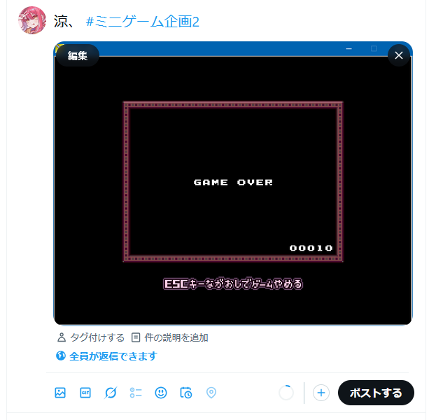

皆さんお久しぶりです。涼、です。前回の大戦から10年も月日が流れました。今回はそのリバイバル企画です。前回と同じくミニゲームで得点を競い合う、ランキング形式の企画となります。新しいゆめにっき派生も増え、ミニゲームも増えました。ぜひ、皆さんには新しく、懐かしいこの企画を楽しんでいただきたいと思います。
日本語版であると確認するため、タイトルバーが見えるようにスクリーンショットを撮ってください。
上記の手順の代わりに、以下の手順でも報告可能。( 夢日録【metronom】を追加)
